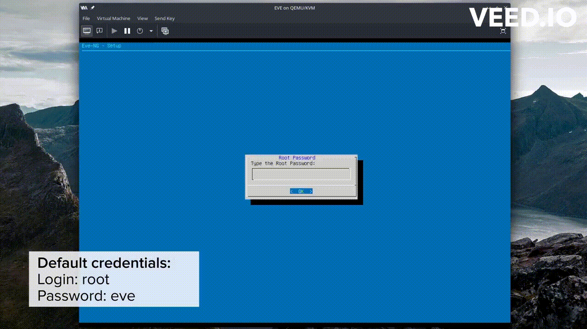

Installer EVE-NG
EVE-NG (Emulated Virtual Environment - Next Generation) est un logiciel de virtualisation réseau.
Objectif 4 : Installer EVE-NG sur KVM/Qemu
Installation et configuration
Voici les étapes pour l'installation et la configuration d'EVE-NG (Emulated Virtual Environment - Next Generation) :
Étape 1 : Téléchargement de la dernière version d'EVE-NG :
Téléchargez la dernière version de la communauté gratuite d'EVE-NG (Version 5.0.1-19) depuis le site Web d'EVE-NG : Site Web EVE-NG.
Étape 2 : Préparation du fichier d'image
- Placez le fichier
EVE-CE-0.vmdkdans un répertoire de votre choix.

- Utilisez la commande
qemu-imgpour convertir le fichier d'image au format.vmdken.qcow2:
qemu-img convert -f vmdk -O qcow2 EVE-CE-0.vmdk EVEms.qcow2
- Donner une taille de
80 Goà EVEms.qcow2.
qemu-img resize EVEms.qcow2 80G
Étape 3 : Configuration de Virt-Manager
- Lancez
Virt-Manageren utilisant la commande suivante :
virt-manager
- Dans
Virt-Manager, ajoutez l'imageEVEms.qcow2en suivant ces étapes :

Étape 4 : Configuration finale d'EVE-NG
Lorsque vous exécutez EVE-NG pour la première fois, suivez les étapes à l'écran, qui incluent une fenêtre bleue où nous devrons appuyer sur "OK" à chaque fois. Les étapes d'installation et de configuration spécifiques peuvent varier en fonction de la version d'EVE-NG que vous avez téléchargée.

Étape 5 : Mises à jour du système
- Après avoir configuré EVE-NG, exécutez les commandes suivantes pour mettre à jour notre système :
sudo apt-get update
sudo apt-get upgrade
sudo apt-get dist-upgrade
Étape 6 : Redémarrage de la machine virtuelle EVE-NG
Redémarrez la machine virtuelle EVE-NG pour appliquer les mises à jour :
sudo reboot
Note
Nous devrions maintenant être prêt à utiliser EVE-NG pour la virtualisation de réseaux.
Installer Linux Client Side
Cette version de EVE-NG Integration prend en charge divers schémas d'URL tels que telnet://, capture://, docker://, et vnc:// (via Vinagre). De plus, elle inclut un script pour travailler avec les fichiers .rdp générés par EVE-NG, ce qui facilite l'intégration de cette solution sur des systèmes Ubuntu/Debian et d'autres distributions Linux.
Pour Windows : Windows Client Side.
Étape 7 : Télecharger Linux Client Side
Packages in “eve-ng-integration”

- Alternativement, vous pouvez installer
eve-ng-integrationdepuis le terminal à l'aide de la commande suivante :
# Vous pouvez installer eve-ng-integration à partir du PPA officiel :
sudo add-apt-repository ppa:smartfinn/eve-ng-integration
sudo apt-get update
sudo apt-get install eve-ng-integration
Warning
La configuration de wireshark-common offre la possibilité d'installer Dumpcap de manière à permettre aux membres du groupe système "wireshark" de capturer des paquets. La question posée est : "Les utilisateurs non superutilisateurs devraient-ils être autorisés à capturer des paquets ?".

Si vous utilisez une distribution de type Debian, nous pouvons exécuter la commande suivante et choisir la réponse Oui (si on veut):
sudo usermod -a -G wireshark $USER
sudo dpkg-reconfigure wireshark-common
Ressources supplémentaires
- Pour plus de détails, vous pouvez consulter les liens suivants: EVEng Documentation, Linux Client Side sur Github, PPA